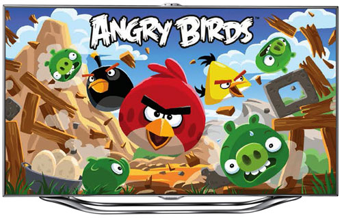

|
Multi Deivces Game
|
Multi Deivces Game is that mobile device acts as input device and TV acts as a game center. It can use the mobile device 's mobility and TV's big screen and good sound.
It tries to provide different user experience with PC game.The Game include two parts one is running on device and the other is running on TV. Much like live TV, you can create a channel to play a game.
Your friend or family can join it remotely or share same TV deivce. The participator can join or just view the game at any time.
Its featues:
Platform dependency,support platform like win8,andriod,ios.
mobile device support and provide interactive user experience.
multiple user support,different user's private view is different, share public view on TV.
low network bandwith, just transfer minimum data.
high flexibility, game can be native application , java application or WebGL.
easily extension, cloud server support.
Using Scenario
mobile phone as input device

multiple players
Demo
Curretly we just provide windows +TV
1.from windows, open share folder \\server\sydney, and run sydney
Fn[F1|F2|F3]--change channel n character's pose
n[1|2|3]--switch to channel n
a --move camera far
b --move camera near
w --change device character's pos
2.from TV open the url http://server/demo/tvgame/
for step 1 and 2, you can run step 1 or step 2 first, there is no sequence required.
Game live channel
channel 1
channel 2
channel 3